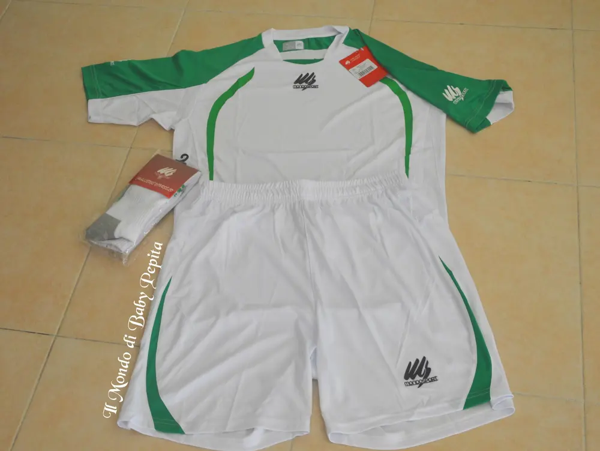
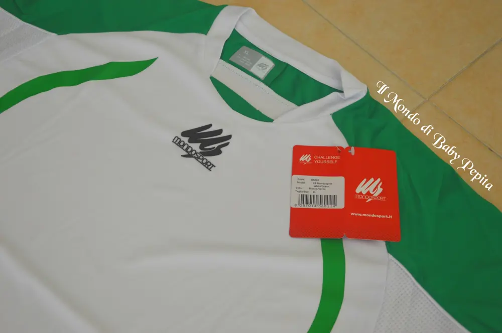
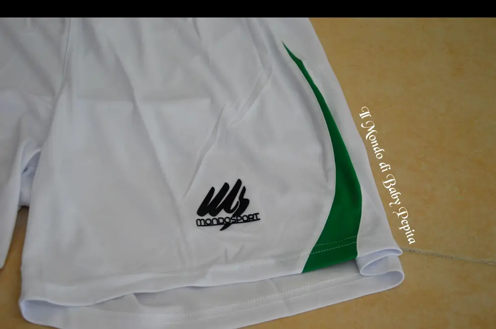
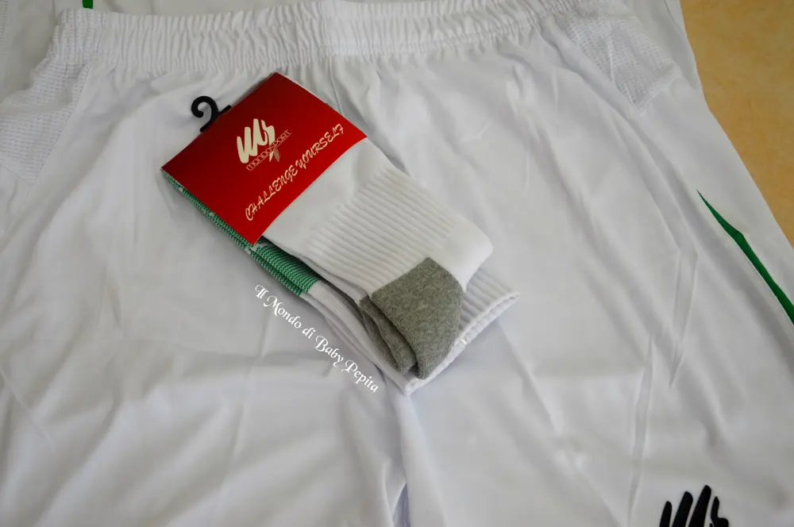
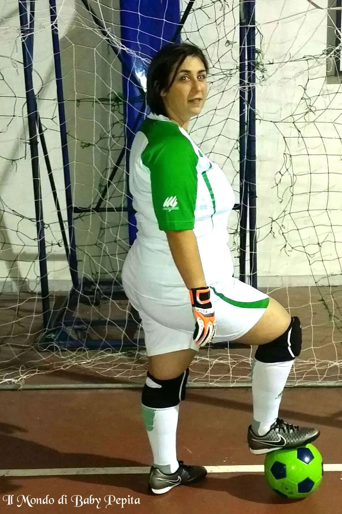
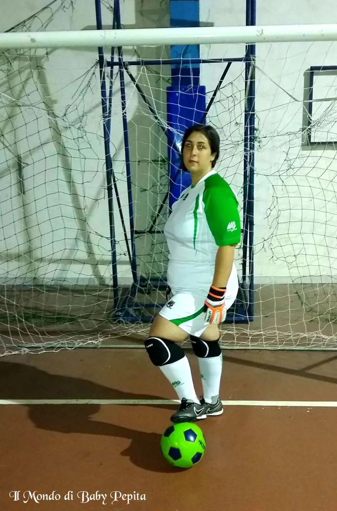
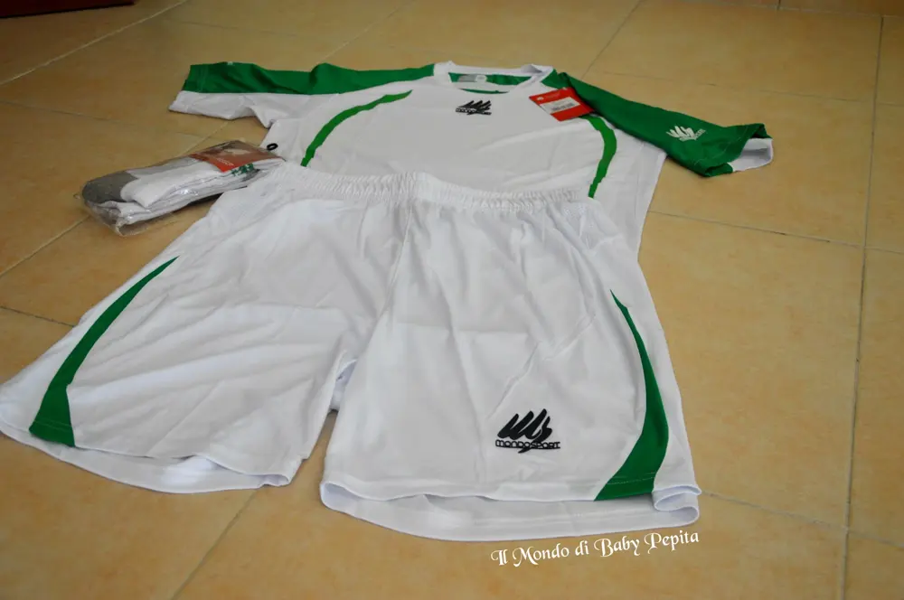
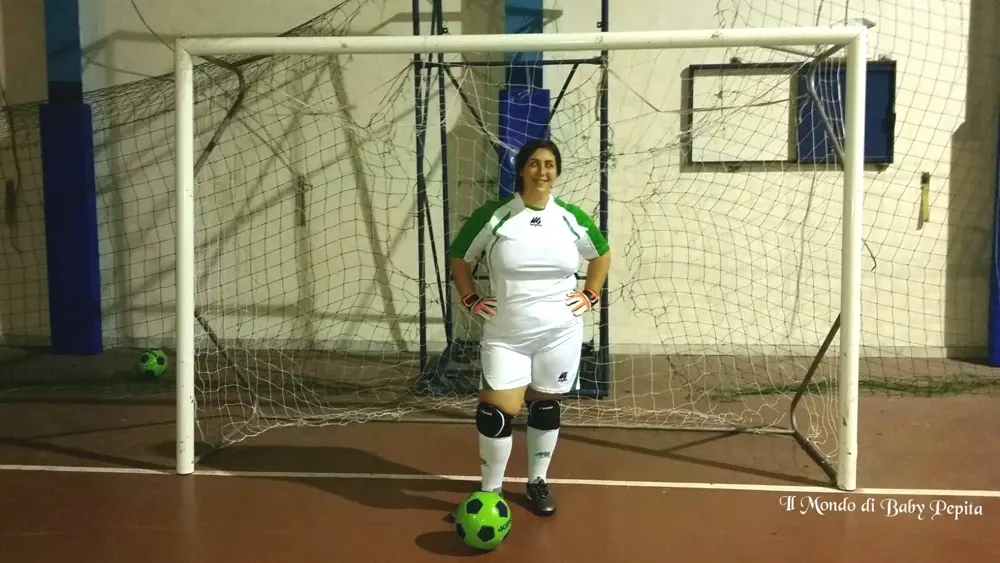

Mondo Sport s.r.l. - completino da calcio
 Amazon è anche sport e in questa recensione voglio mostrarvi un completino da calcio di Mondo Sport s.r.l.Mi ha graditamente omaggiata di un piccolo kit per giocare a calcio.
Amazon è anche sport e in questa recensione voglio mostrarvi un completino da calcio di Mondo Sport s.r.l.Mi ha graditamente omaggiata di un piccolo kit per giocare a calcio. Il kit è:1 maglietta1 pantaloncini 1 paio di calzerotti coordinati.
Il kit è:1 maglietta1 pantaloncini 1 paio di calzerotti coordinati.

Mi è arrivato nella rapidità di un giorno. Già per l’eccellente servizio di spedizione ha guadagnato punti.Il completino (come vedete nelle foto) è tutto completamente bianco con due grandi strisce verdi che prende tutte le spalle e invece sui pantaloncini c’è solo un piccolo angolo verde per intonarlo alla maglietta, i calzettoni poi sono anch’essi bianchi con il logo verde ed una parte dietro al polpaccio verde.


Materiale leggero ma di buona fattura, in poliestere 100%, insomma di ottima vestibilità.
L’unica pecca forse che possiamo attribuirgli è il fatto che è un tantino trasparente hahah

Ma come qualità è eccellente, non fa sudare.

Poiché ho fatto indossare questo completino a mia sorella che è portiere in una scuola calcio, ho preso la taglia XL per stare più comoda, corrisponde esattamente alla taglia scelta e non bisogna prendere taglie in più.In alternativa ci sono anche la S, la M e la L.
Di colori ci sono non solo questi che ho io, cioè bianco e verde, ma anche arancione e bianco, blu e bianco, verde e nero.
Prezzo: 16,90 €
 Per acquistarlo lo potete trovare qui:https://www.amazon.it/Completo-Calcio-brand-Mondosport-Colore/dp/B01HY2PTD4/ref=cm_cr_arp_d_product_top?ie=UTF8&th=1&psc=1Per quanto riguarda me seguitemi sui miei social:FACEBOOKINSTAGRAMTWITTERYOUTUBE
Per acquistarlo lo potete trovare qui:https://www.amazon.it/Completo-Calcio-brand-Mondosport-Colore/dp/B01HY2PTD4/ref=cm_cr_arp_d_product_top?ie=UTF8&th=1&psc=1Per quanto riguarda me seguitemi sui miei social:FACEBOOKINSTAGRAMTWITTERYOUTUBE